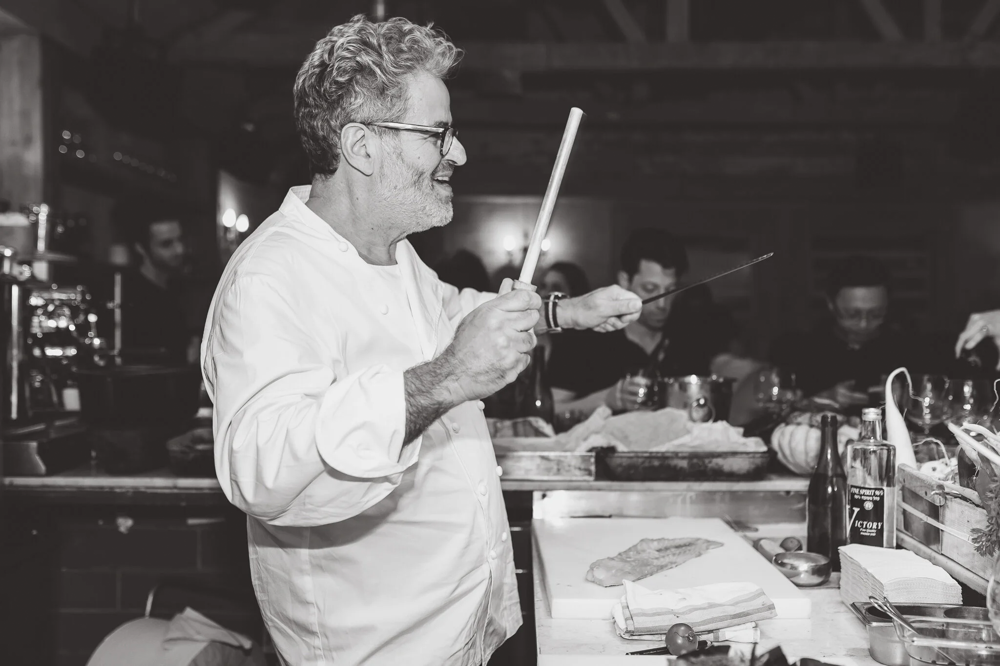
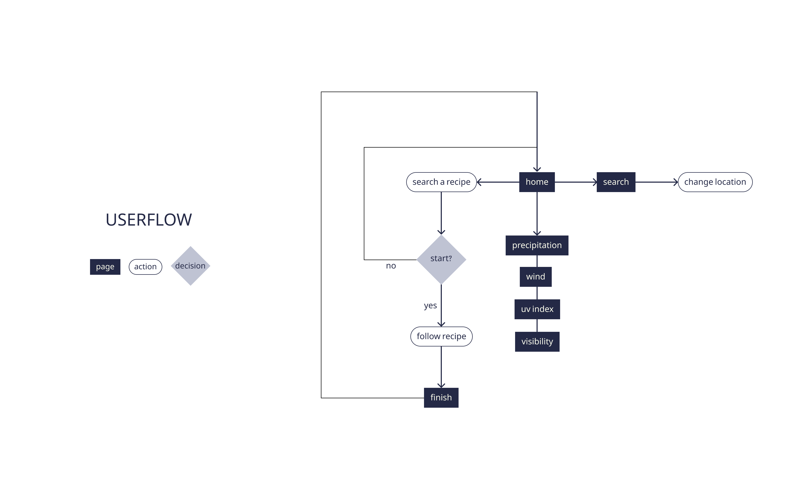
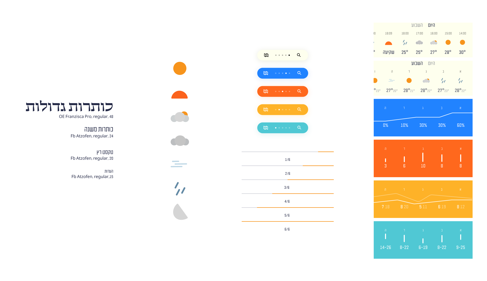
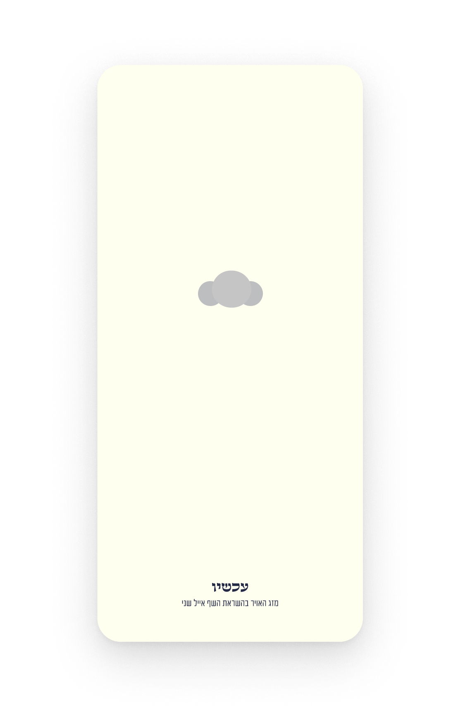
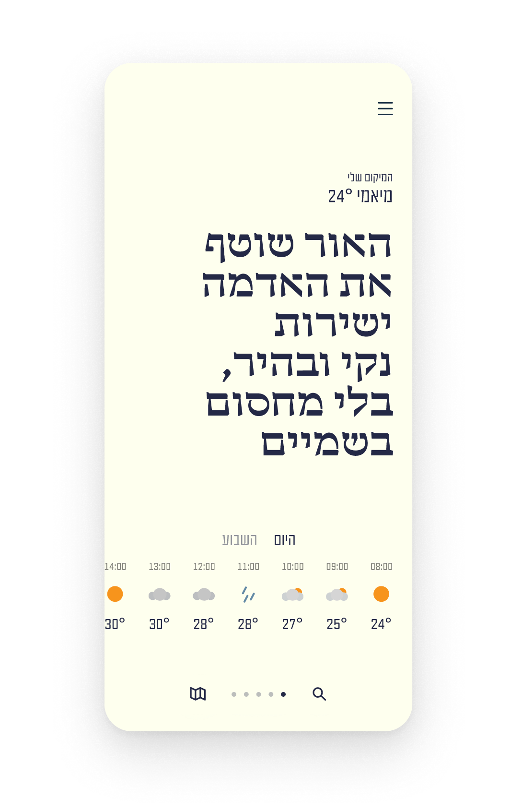
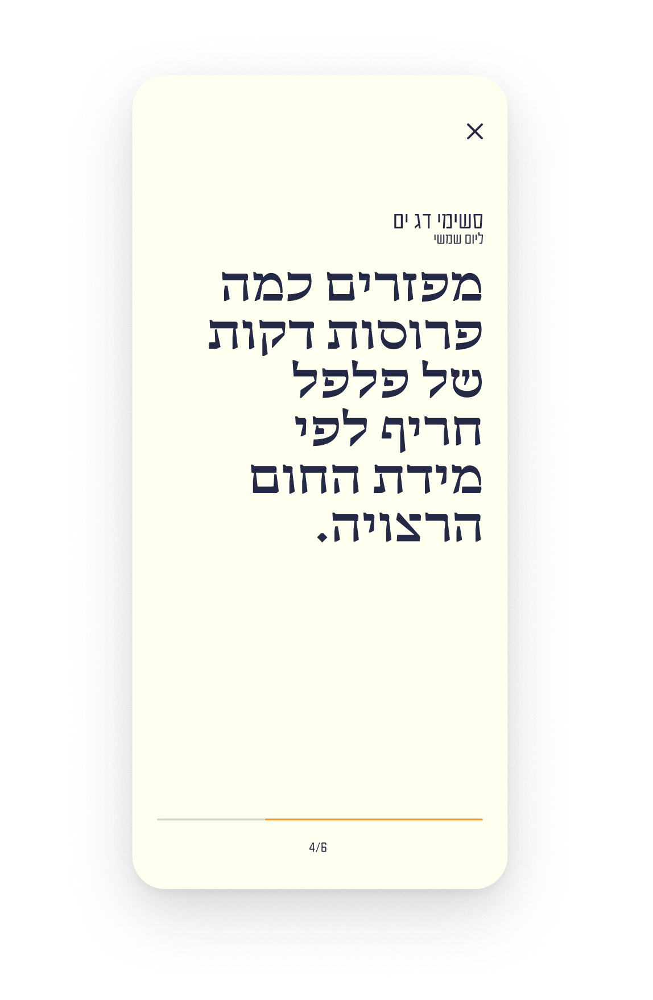
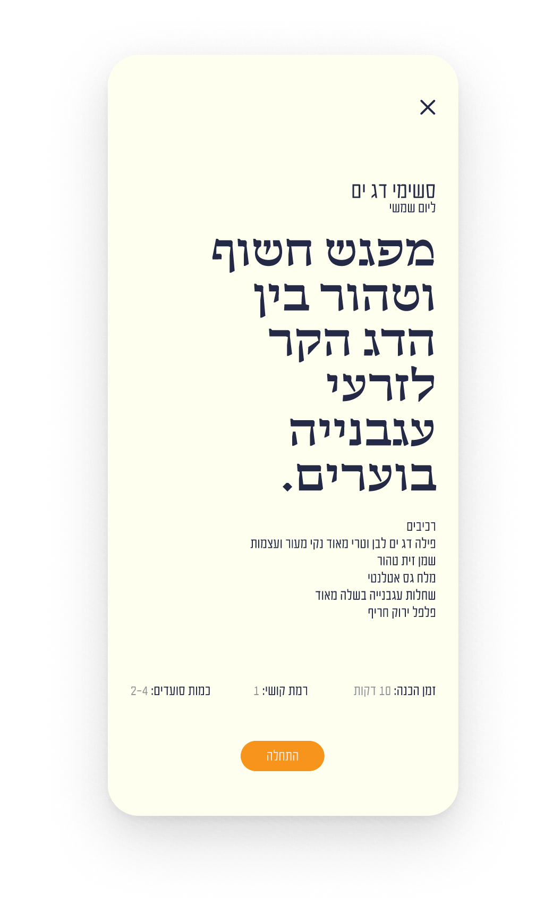
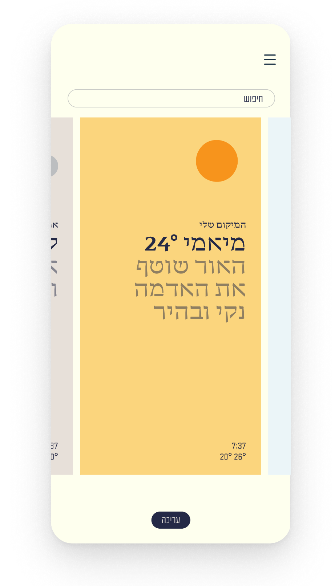

Now

about
Weather app inspired by chef eyal shani. The app creates a connection between weather, emotions, and food, providing users with culinary content and recipes tailored to the current atmospheric conditions.
research


the challenge
the solution
style guide

Iconography
I developed a “raw” iconography style based on simple geometric shapes, drawing inspiration from the intentional simplicity and directness of his cooking techniques.
Information Architecture
Unlike standard weather apps, I separated each meteorological data point into its own independent screen. This decision was inspired by Eyal Shani’s deep admiration for raw ingredients, giving each element its own exclusive stage.
Color Palette
I selected highly saturated background colors that shift between screens, reflecting his vibrant and surprising persona. The bold colors represent his unique character while creating a clear visual distinction between different data points.




